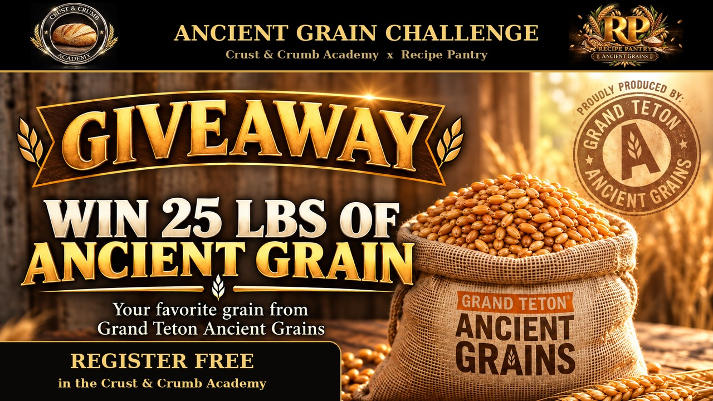
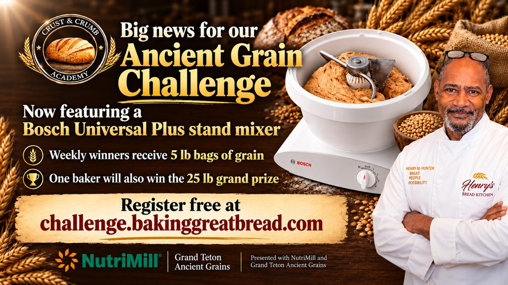
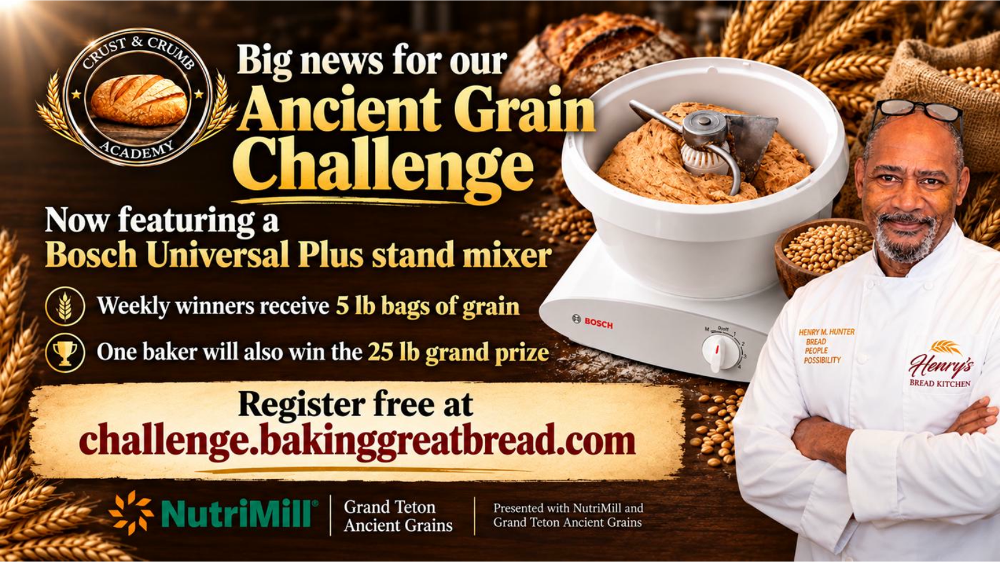
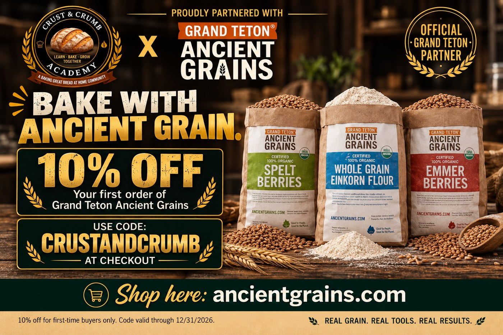
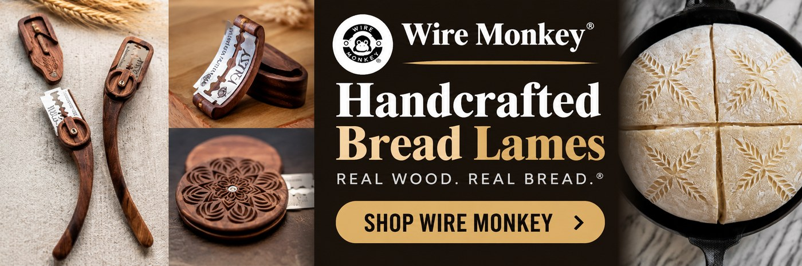

Crust & Crumb Academy · with Grand Teton Ancient Grains and NutriMill
Register today. Learn at your own pace. You don’t need to complete a lesson or quiz to sign up.
Entry is free, with no Academy membership or payment required. Start with From Berries to Bread, then work through seven short lessons on ancient grains and fresh-milled flour.



Every registered baker is entered in the December 1 Bosch Universal Plus mixer drawing: one entry automatically, plus one for each verified point. No lesson is required for the mixer.
Register today. Learn at your own pace. You don’t need to complete a lesson or quiz to sign up. No Academy membership or payment is needed. 30 winners will each receive one 5-pound bag of grain.
Loading…
Seven lessons, each one a video and a short quiz. Watch, pass at 70% or better, leave your YouTube comment, and mark it done. Complete at least one for weekly Friday draws; complete all seven for the December 1 grain prizes. Registration alone enters you in the December 1 mixer drawing.
Earn 20 points for each completed challenge lesson. Each of the seven lessons counts once.
Repeated comments don't earn extra points. The two optional bonus quizzes earn 20 points each, once, after you save a passing score and confirm your YouTube comment.
Found this helpful? Like the video, subscribe for the next lesson, and leave a question or tell us what you learned.
Liking and subscribing are optional. They don't earn points or improve your giveaway odds.
Loading the lessons…
From Berries to Bread · Ancient Grain Series. 10 questions drawn at random from a 20-question bank. 80% to pass.
Earn 20 bonus points once. Watch, pass at 80%, save your score, and confirm your YouTube comment. Every point adds one entry in the Bosch Universal Plus stand mixer drawing. This bonus does not replace any of the seven required lessons.
Learn to sprout grain for bread. Wake the berry up with Henry, then test the full process from soaking and rinsing through drying, milling, and baking. 10 questions drawn from a 15-question lesson bank. 70% to pass.
Earn 20 bonus points once. Watch, pass at 70%, save your score, and confirm your YouTube comment. Every point adds one entry in the Bosch Universal Plus stand mixer drawing. This bonus does not replace any of the seven required lessons.
Every point is one more entry in the drawings. The two bonus quizzes earn 20 points each, once you save a passing score and confirm your YouTube comment. Other activities show as pending until we confirm them, usually within a couple of days. Need a recipe? The Recipe Pantry fresh-milled and ancient grain library has you covered.
Loading the list…
Four 5 lb bags are drawn each Friday from October 16 through November 27 for bakers with at least one completed lesson. The final two 5 lb bags and the 25 lb grand prize are drawn live on December 1 for bakers who completed all seven. One 5 lb win per person; earlier 5 lb winners remain eligible for the grand prize. The Bosch Universal Plus mixer is drawn December 1 from all registered bakers. Each registered baker gets one mixer entry plus one for every verified point; winning grain does not affect mixer eligibility.
No drawings yet. The first Friday draw is October 16.
Verified points only. A ✓ means that baker has finished all seven lessons and qualifies for the December 1 grain prizes. At least one completed lesson qualifies a baker for weekly Friday draws. Each baker can win one 5 lb bag and remains eligible for the grand prize. Registration alone enters every baker in the mixer drawing, with one entry plus their verified points.
| # | Baker | Qualified | Points |
|---|---|---|---|
| No one's on the board yet. Register and be the first. | |||
Know someone who mills, or wants to? Send them the challenge. More bakers in the drawing means a bigger celebration for ancient grain.
You don't have to buy anything to enter or to win. Registering and taking the lessons on this page is free, and buying anything from Grand Teton Ancient Grains, NutriMill or any other partner doesn't improve your chances.
If you post photos, videos or comments about the challenge, you give Henry Hunter, Crust & Crumb Academy and Baking Great Bread at Home permission to share them, with your name, on our channels and with Grand Teton Ancient Grains. You keep ownership of your work, and you can ask us to take anything down by emailing henrysbreadkitchen@gmail.com.
We use what you enter here to run the challenge and to send you the Baking Great Bread at Home newsletter, which is one email a week with recipes and baking info. You can unsubscribe with one click in any email. We share a winner's name and shipping details with Grand Teton Ancient Grains, or with NutriMill for the mixer winner, only to ship the prize. This challenge isn't sponsored or run by Skool or Facebook.
The grain and the gear behind the challenge. Use these codes if you want to bake along at home. Some links are affiliate links, and we may earn a commission at no cost to you.

